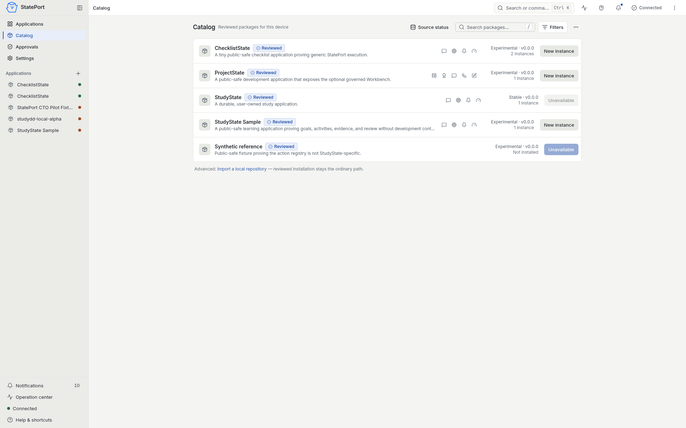
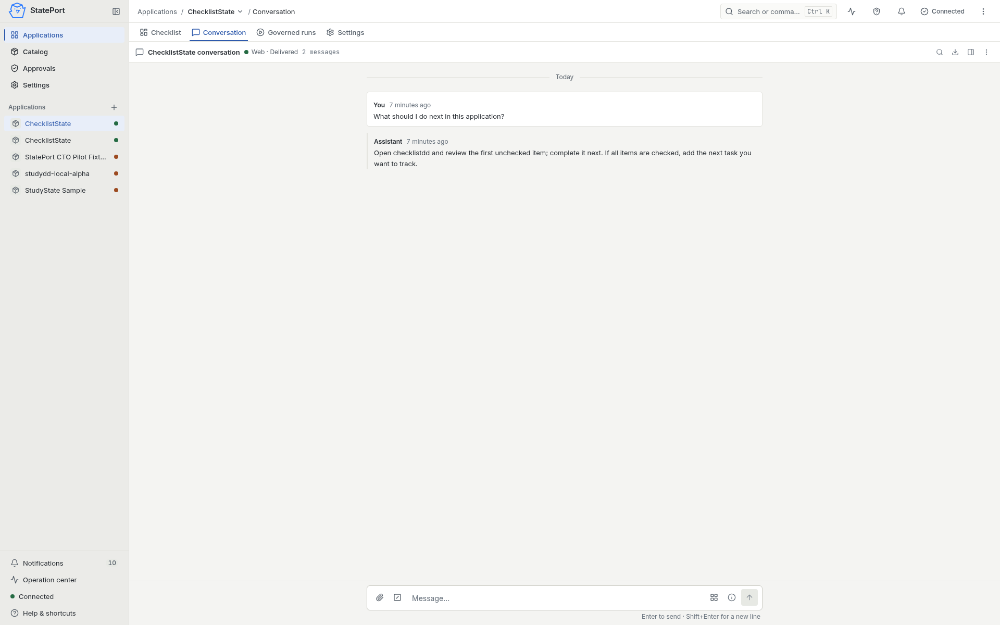
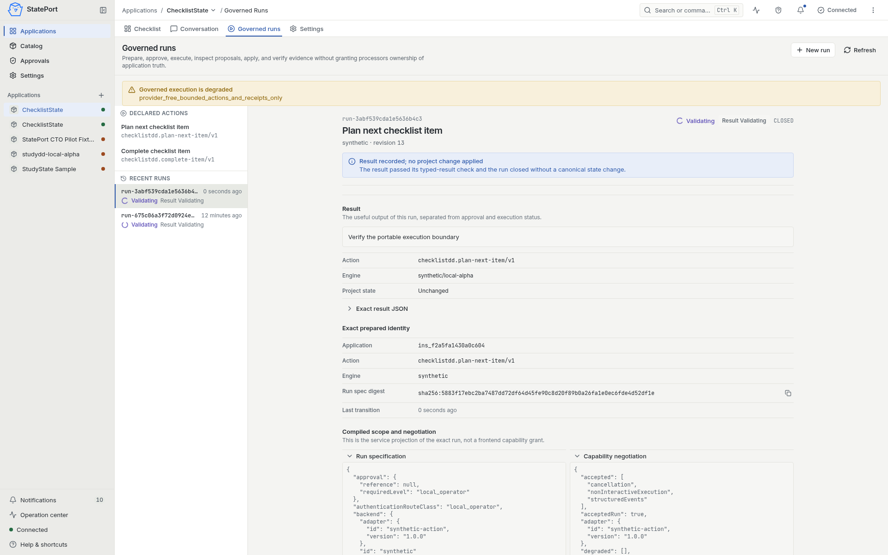
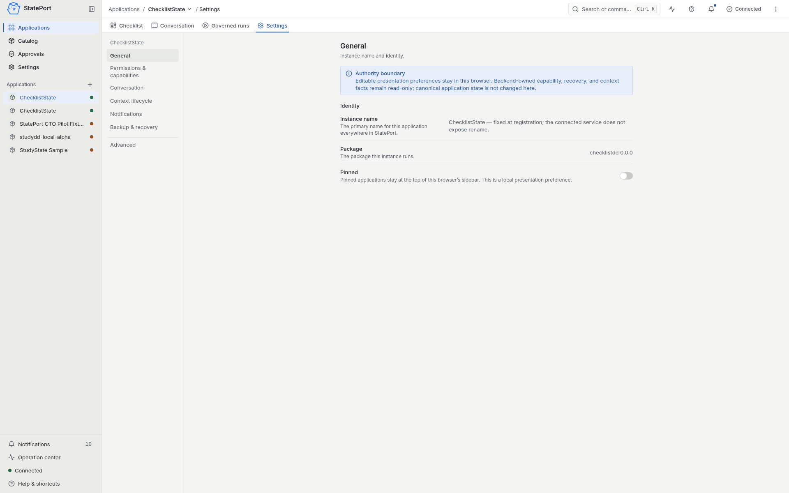

{kind=link}
{kind=link}
{kind=link}
{kind=link}
01
The work stays readable
Important facts live in inspectable state, not only in a provider’s memory or a long transcript.
Working fixture · public software release in preparation
StatePort gives ongoing AI-assisted work a named home for its files, decisions, permissions, and history—instead of leaving the project inside a chat.
Prototype available to viewSoftware not yet available
Keep it · inspect it · move it
What it is
Current product direction
StatePort is being built as an application-first workspace. Each project keeps its current facts and evidence close, while conversations, models, and tools help around that source of truth.
Current evidence
A captioned walkthrough of the working public-safe fixture: a real conversation, a bounded run, its result, evidence, and the settings around it.
Working fixture walkthrough recorded 22 July 2026. Read the transcript and evidence notes.
Click any screen to inspect it at full size.

See what is ready, what is unavailable, and what is already installed.

The answer stays attached to the project instead of disappearing into a separate chat.

A bounded action returns a readable result and says whether the project changed.

Settings explain what the application owns, what you can change, and where the data stays.
Why it matters
01
Important facts live in inspectable state, not only in a provider’s memory or a long transcript.
02
A proposal, permission decision, applied result, validation, and human acceptance remain separate facts.
03
Models and execution hosts work around the project’s contracts instead of quietly becoming its owner.
How it works
01 / DEFINE
State its purpose, durable facts, requested capabilities, lifecycle rules, and validation expectations.
02 / OWN
Give the project a pinned definition and a readable place for its current state and history.
03 / WORK
Conversations, models, and execution hosts contribute only through the capabilities the instance permits.
04 / VERIFY
Record what was requested, authorized, applied, checked, and accepted without collapsing those stages.
Choose a route
StatePort serves two different questions. Keeping them separate makes the first visit clearer.
For prospective users
Follow the interface walkthrough, see the current product direction, and check exactly what is available.
Open the product walkthroughFor builders and operators
Read the Stateware model, StateSpec structure, governance rules, portability contract, and evidence ladder.
Open the documentation pathRoadmap note: Agent Kits remain an early direction, not a released capability. Read the scoped roadmap.